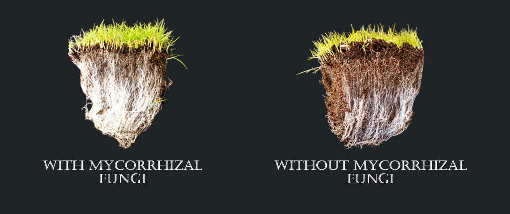
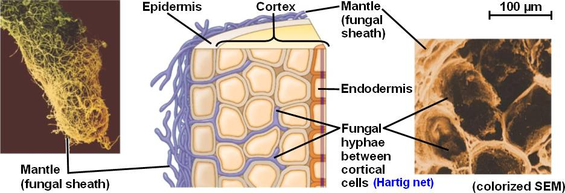

Fungi are incredible. We are constantly discovering more and more fascinating information about their ecology and complexity. When I say fungi, you might think of mushrooms popping out of the soil and brackets growing on the side of trees. These are just the fruiting bodies of the fungi. The true fungi lies within the soil. A huge web of tiny vessels known as mycorrhiza (my-corr-hi-za, get used to that word, it’s mentioned a lot in this post). Thinking of the mushroom as the entire fungi is a bit like thinking of an acorn as a whole oak tree. Fungi have proved to be an incredibly important part of ecological systems, and this post discusses some of the key discoveries and uses of the fungal networks. All of the new and developing information stems from one man’s discovery over 130 years ago...
In the 1880’s a German botanist named Albert Bernhard Frank was conducting research on truffles to find a way to cultivate them, under instruction of the King of Prussia. Although he failed in his task (we still can’t do it now!) he made a fundamental discovery regarding how plants interact and communicate with one another. He found that the truffles only grew near woody plant species consistently across a range of environments. Upon further inspection he started to investigate the thin white rootlike structures that spread from the truffles all the way to the large tree roots.
After studying these structures he became the first to coin the term ‘mycorrhiza’, which comes from the greek mukes (English: myco) meaning fungi, and the greek rhiza meaning root. He came to understand that there was a deep symbiotic relationship between fungi and plants. He hypothesised that there was an exchange of nutrients between the two organisms. Prior to this fungi were only recognised for their pathogenic and parasitic qualities. The word symbiosis had only existed for a few years at this point in time and Albert Frank was the one who invented it!
A.B. Frank certainly was not the first to discover the structures, but he was the first to correctly assume their purpose and function. Theodor Hartig was another german botanist who, in 1840, wrote about the structures, believing them to be a part of fungi pathogenic in nature. Frank’s discovery was highly scrutinized and was generally unaccepted by the scientific community. It took 40 years of study, experiments and papers before his ideas became more accepted.
The fascinating network of mycorrhiza that Frank discovered is now recognised as one of the most important biological structures across the world’s natural environments. The fungi’s ability to connect hundreds or thousands of plants together has shown that the levels of symbiosis and communication are vastly beyond previous expectations. It’s predicted today that 90% of terrestrial plants benefit from interactions with fungi and mycorrhizal networks.
This subterranean connection has been compared to the internet, hence the term “world wood web” (a term that brings forth both a sigh and a smile). The network provides an array of interesting functions. The primary service that the network provides is exchange of nutrients both via uptake and trade with other plants. The fungi’s dense web of mycorrhiza creates an incredibly large surface area capable of accessing nutrients that can be harder to come by in the soil. Mycorrhiza can absorb nutrients along the entire length of their root whereas plants typically only absorb through the root tip hairs. Nitrogen, phosphorus and minerals such as zinc, copper and iron are all absorbed, delivered and transferred to the plants. Just like any modern trade these valuable imports are, of course, taxed! Plants can give anywhere between 4-20% of their produced sugars to the world wood web in return for the precious nutrients.

You may be thinking this is quite a large tax just for some nutrients, but in most cases plants produce sugars in abundance. These nutrients, however, are often a limiting factor that can restrict plant growth. Moreover, the nutrient exchange is only one part of the incredible utility of the mycorrhiza. They also:
It’s no surprise that plants actually release hormones to attract mycorrhiza to them. I could write entire posts about any one of these fascinating benefits. The studies and explanation of the mechanisms for all of these are well worth exploring. I encourage anyone reading this to check out the studies linked above and it’s definitely worth picking up a copy of “The Hidden Life of Trees” by Peter Wohlleben. It’s more focused on the plant’s side of the deal but it delves deep into the mycorrhizal world wood web. After learning about all of this there was one question on my mind...
Arbuscular mycorrhiza! This is a type of mycorrhiza often simplified to ‘AM’. It’s also known as endomycorrhiza. It gets this name because it actually penetrates plant root cortical cells creating structures called arbuscules (latin root, arbor meaning ‘tree’ or, more directly, ‘tuft of feathers’) within the root cells themselves. Ectomycorrhiza are a different sort of mycorrhiza that work similarly but instead of entering the cells themselves they weave their way between the cells creating a structure called a Hartig Net (remember Theodor Hartig from earlier?).

Studies have shown the growth and movement of mycorrhiza through soil is generally dictated by the presence of phosphorus. In areas of high phosphorus the mycorrhizae grow much slower giving it time to absorb the phosphorus but when no phosphorus is detected hormones called strigolactones are released which promote growth and germination. It’s not only mycorrhizae that make use of these hormones. They’re produced and used in plants as signalling hormones too. It’s this piece of information that holds the key to how the fungi/plant symbiosis is established. An exudate is a liquid that gets secreted from the vessels of a plant. Root exudates amass around growing roots of plants and contain proteins that have shown to increase respiration and growth within mycorrhizae. The proteins found within plant exudates are produced due to increased levels of strigolactones within the plant itself.
Once a mycorrhiza encounters plant exudate it begins a new stage of development known as the 'presymbiotic' stage. Upon entering this stage, the hypha begin to branch and spread out, trying to get in contact with the future host-plant that’s releasing the exudate. Upon reaching the host-plant’s cell, the fungi produces a unique cell called an appressorium. This cell is specialised in breaking plant cell walls through a process called ‘turgor’, wherein pressure is increased on the cell wall of a plant until it bursts open. They’re like fungal sappers and they’re used both by the lovely arbuscular mycorrhiza and by nasty pathogenic fungi.
Once in the cell the arbuscular mycorrhiza begins to form a structure called an arbuscule. This is the star of the show and it’s what makes AM, “AM”. As you can see in the diagram, the tree-like structure grows within the cell, creating a large surface area which absorbs more than the surrounding plant cells. These arbuscules are like little trade hubs that set up in the plant cells to exchange nutrients. Arbuscules seem to have a relatively short lifespan of only 2-8 days. It’s not clear why the lifespan is so short. This study delves deeper into the entire lifespan of the arbuscules and predicts it may be based around the plant’s need to police the presence of the symbiote.
Mycorrhizae, unsurprisingly, favour nutrient rich soils such as rainforest and grasslands with a high diversity of plants for them to utilise as hosts. In diverse environments the mycorrhiza have access to a greater range of nutrients and support networks to maintain stability. Stability is really at the core of the function of mycorrhiza. It creates a literal net to support itself, other organisms and even the physical structure of the soil. I consider it to be a great example of a keystone organism on a global scale. It’s even been found in Antarctica’s South Shetland Islands!
All of these wonderful properties that fungi possess are certainly applicable to our own gain too. More and more farmers are coming to understand the benefit of a strong community of mycorrhiza. I personally met with a forester who explained how they encourage the growth of the fungi to support trees, whether it’s for conservation or timber. I intend to write another post where I’ll delve into mycorrhizal networks in an agricultural setting, comparing till vs. no till practices regarding mycorrhiza. I also plan to talk about glomalin, the super glue protein of the soily plant world.
Thanks a lot for reading. I hope you learned something and found it as fascinating as I do!